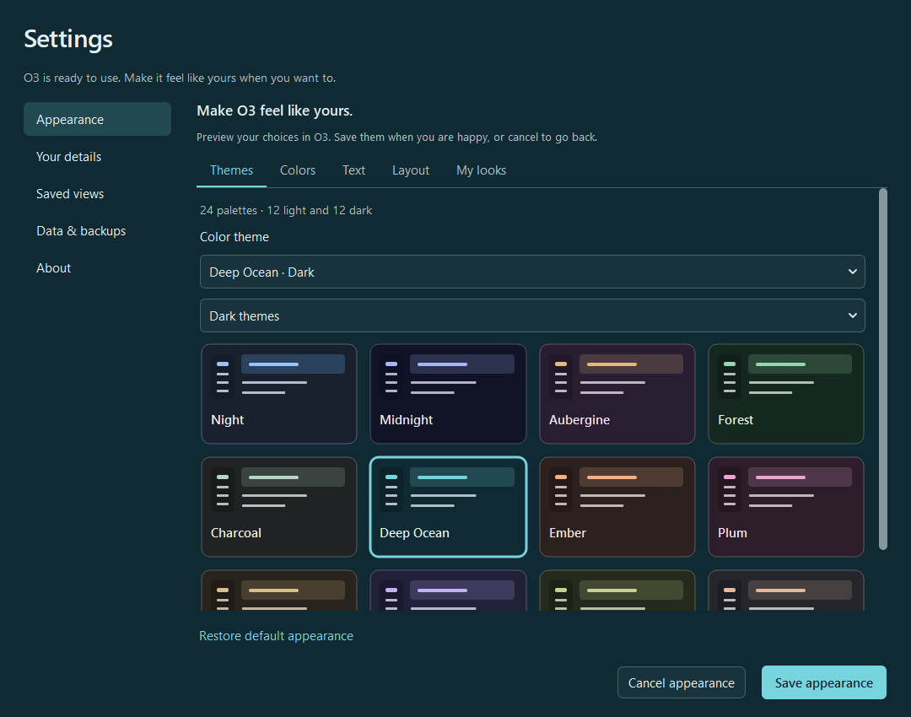
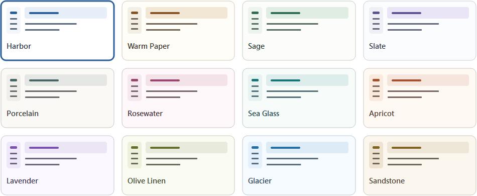
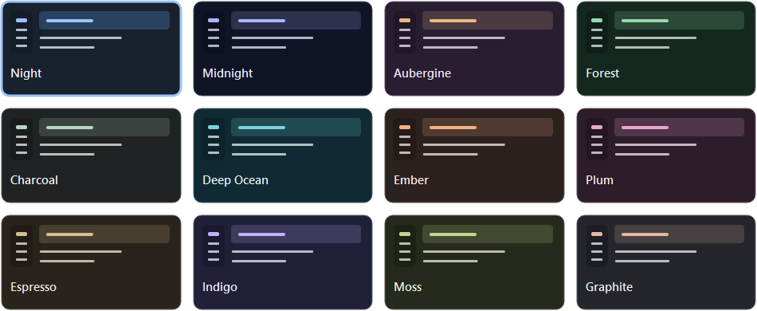
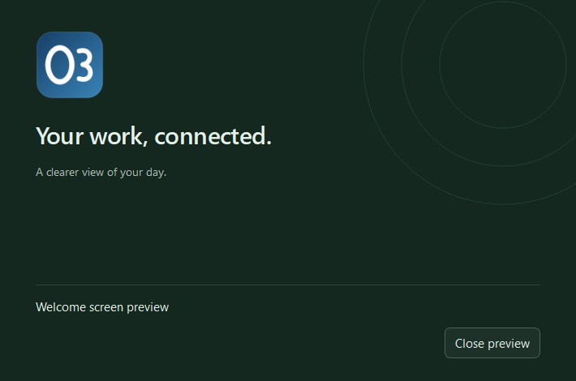

O3 · UPGRADE REVIEW 2 · 27 OCTOBER 2026Make it yours.
A more personal O3, with 24 considered color palettes and clear controls for how your workspace looks and feels. Beautiful defaults are still one click away.

Themes are visual choices. Light and dark palettes receive equal attention.
Colors with character
12 light and 12 dark themes, a custom accent color, and stronger contrast. Labels and buttons stay readable.
Comfortable reading
Five text sizes, three lettering styles, separate reading fonts and sizes, line spacing, and page width.
Your favorite looks
Save, reuse, update, rename, or remove complete combinations. Preview first; Save or Cancel when ready.
A quieter workspace
Compact, balanced, or roomy spacing. A quiet layout keeps navigation in the Menu button. Settings adapts to smaller windows.
Twelve ways to keep it light.

Twelve ways to go dark.

A welcome that belongs.
The review launcher now opens with the O3 icon and a welcome screen in your chosen palette. It closes when the workspace is ready, without an artificial delay. Preview it or turn it off in Appearance → Layout.

A preview of the working review welcome screen. Managed native launcher integration remains pending.
Checked before packaging.
77 application tests · 7 visual tests · 232 native UI checks passed.
The unpacked ZIP opens with exactly one welcome screen, an O3 window/application icon, and 24 theme choices. All 81 payload hashes were verified.
Checks cover all palettes with extreme accent colors, stronger contrast, keyboard theme selection, 150% text in all three lettering styles, compact Settings, persistence and reopening, failed-save retry, saved looks, reader selection, and the original QC regressions.